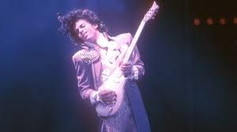
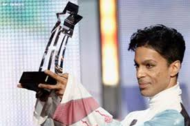

PRINCE

Prince Rogers Nelson (June 7, 1958 – April 21, 2016) was an American singer-songwriter, musician, record producer, dancer, actor, and filmmaker. He is widely regarded as one of the greatest musicians of his generation.
Born: 7 June 1958, Minneapolis, Minnesota, United States
Died: 21 April 2016, Paisley Park, Chanhassen, Minnesota, United States
Full name: Prince Rogers Nelson
Spouse: Manuela Testolini (m. 2001–2006), Mayte Garcia (m. 1996–2000)
ALBUMS:
The Greatest Romance Ever Sold (1999),Dinner With Delores (1996),
Letitgo (1994),
U Make My Sun Shine (2000),
Gold (1995),
Batdance (1989),
The Work Pt 1 (2001),Cinnamon Girl (2004),
I Hate U (1995),The Truth (1997),Thieves in the Temple (1990),
Delirious (1983),Why You Wanna Treat Me So Bad? (1979)

AWARDS:
Grammy Hall of Fame
2008 ·
MTV Video Music Award for Best Choreography
1986 ·
Raspberry Beret
NAACP Image Award for Outstanding Actor in a Motion Picture
1984 ·
Purple Rain
American Music Award for Favorite Album Soul/R&B
1985 ·
Purple Rain
Golden Globe Award for Best Original Song
2007 ·
Song of the Heart
Grammy Award for Best Song
1985 ·
I Feel For You
Grammy Award for Best Performance by a Duo or Group with Vocals
1987 ·
Kiss
MTV Video Music Award for Best Male Video
1988 ·
U Got the Look
MTV Video Music Award for Best Dance Video
1992 ·
Cream
Grammy Award for Best Rock Performance by a Duo or Group with Vocal
1985 ·
Purple Rain
American Music Award for Favorite Album Pop/Rock
1985 ·
Purple Rain
Grammy Award for Best Score Soundtrack for Visual Media
1985 ·
Purple Rain